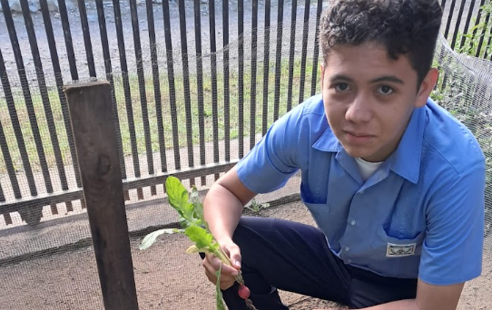

¡Cultivamos nuestros huertos familiares!
Como parte de las actividades del Trabajo Educativo Social (TES), los estudiantes participaron en la creación de huertos familiares, aprendiendo sobre la siembra, el cuidado de las plantas y la cosecha de hortalizas como el rábano, el pepino y la mostaza. Una experiencia que promueve la responsabilidad, el trabajo y el aprovechamiento de los recursos para contribuir al bienestar de nuestras familias.

El Trabajo Educativo Social representa una oportunidad para poner en práctica los conocimientos adquiridos durante nuestra formación académica y contribuir a nuestras familias y comunidades. Mediante la elaboración de huertos familiares, aprendimos la importancia de cultivar nuestros propios alimentos y cuidar el medio ambiente.
Aprendiendo a sembrar
Durante esta actividad, los estudiantes trabajaron en la preparación de los espacios destinados al cultivo y en la siembra de diferentes hortalizas. Este proceso permitió comprender la importancia de cuidar la tierra, proporcionar agua a las plantas y dar seguimiento a su crecimiento.
El cultivo de rábano, pepino y mostaza
Entre los cultivos trabajados estuvieron el rábano, el pepino y la mostaza. Cada uno representó una oportunidad para aprender sobre el desarrollo de las plantas y los cuidados necesarios para obtener una cosecha. Con dedicación y responsabilidad, los estudiantes participaron en las distintas etapas del proceso.
La experiencia de cosechar
La cosecha fue una parte importante de esta experiencia, ya que permitió apreciar los resultados del trabajo realizado desde la siembra. Ver crecer los cultivos y recoger sus productos nos ayudó a valorar el esfuerzo que requiere producir alimentos y la importancia de cuidar nuestros huertos.
Beneficios para nuestras familias
Los huertos familiares pueden contribuir al acceso a alimentos frescos y fomentar hábitos de responsabilidad, colaboración y aprovechamiento de los espacios disponibles. Además, representan una oportunidad para compartir lo aprendido con nuestros familiares y motivarlos a cultivar sus propios alimentos.
Una enseñanza para la vida
Esta actividad del TES nos permitió fortalecer valores como el compromiso, la paciencia, la perseverancia y el trabajo en equipo. También comprendimos que pequeñas acciones, como sembrar y cuidar una planta, pueden convertirse en aprendizajes útiles para nuestras familias y comunidades.
Galería de nuestros huertos familiares
Compartimos algunos momentos de la siembra, el cuidado de los cultivos y la cosecha realizada como parte de nuestro TES.